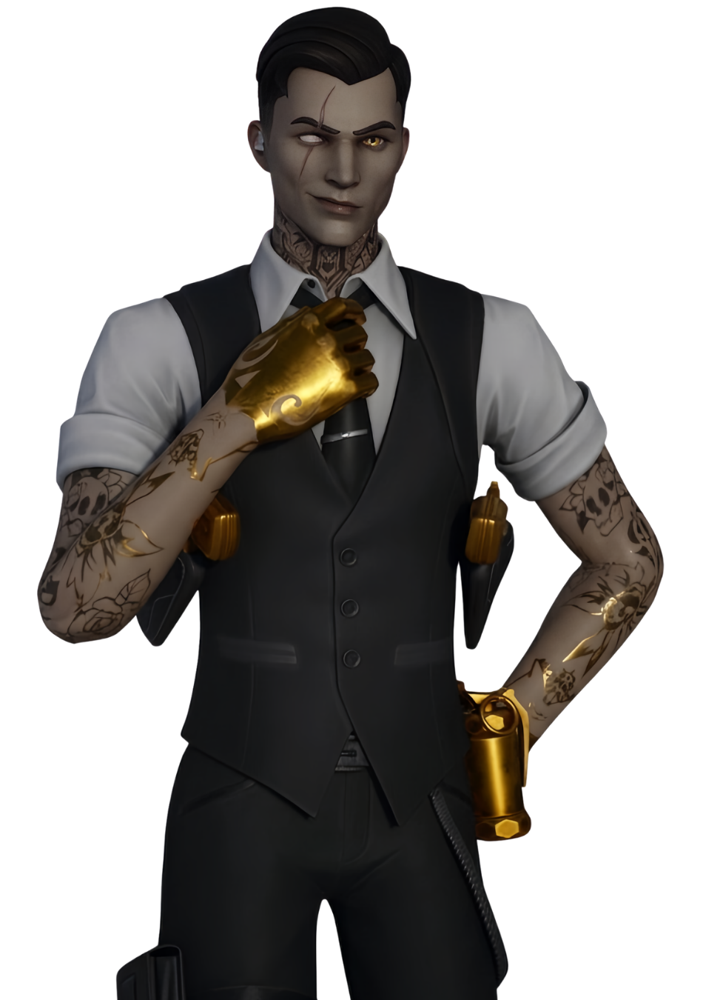
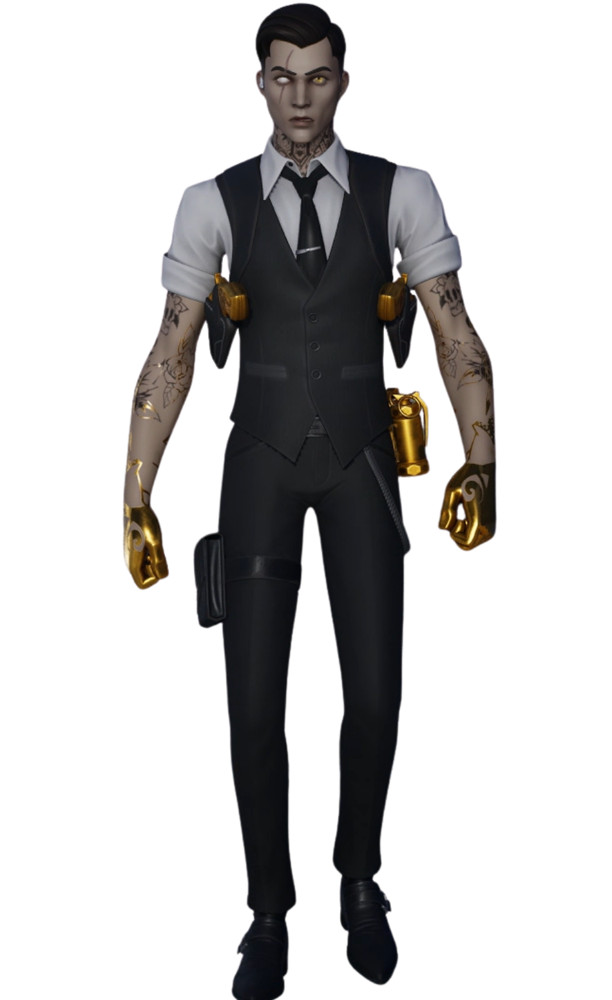

Midas
// Archives Biographiques
L'Agent aux Mains d'Or
Mystérieux agent de l'Institut Onirique reconnaissable à ses mains recouvertes d'or, Midas opère sous les ordres stricts du Professeur Slone. Envoyé à la surface de l'Archipel Ultime pour diriger l'Agence de la division Fantôme et sécuriser la zone du Point Zéro, son commandement tourne au désastre lors du réveil du redoutable Dévoreur. Face au colossal monstre des glaces qui décime ses soldats, Midas lance l'alerte et tente vainement de défendre ses installations. Froidement abandonné à son sort par sa supérieure qui refuse d'intervenir, il disparaît dans la destruction totale de sa base, les communications rompues à jamais.
// Variantes Visuelles
